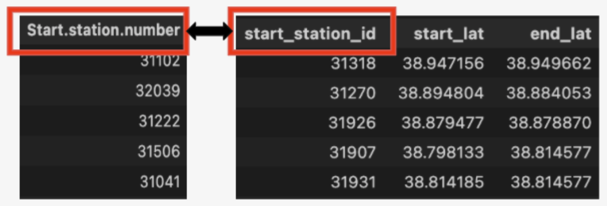
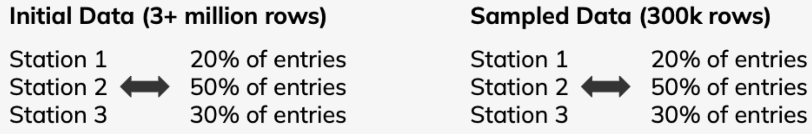

What is data cleaning ?
Data cleaning is probably the most important part of any data science project, for its usually the step that takes the longest tine and is the most delicate, considering how
important it is to have all the data in the correct format to develop good and accurate models.
In short , Ddta cleaning is the process of fixing or removing incorrect, corrupted, incorrectly formatted, duplicate, or incomplete data within a dataset. When combining multiple
data sources, there are many opportunities for data to be duplicated or mislabeled. If data is incorrect, outcomes and algorithms are unreliable, even though they may look correct.
There is no one absolute way to prescribe the exact steps in the data cleaning process because the processes will vary from dataset to dataset. (Source)
Below is a good look at how data cleaning usually looks like:
Data cleaning in this project
Considering that the data was gathered from pre existing CSV files, there was no extensive cleaning required, but rather minor pre-processing for specific needs of this project. All data cleaning was completed using Python. The correct sequence to follow in our Github Repository for data cleaning is “511 Geospatial Features Append.ipynb” followed by “Joining_data_teg.ipynb”.
It is important to mention all NA values were dropped since there were a total of 20,000 NA values out of 20 million rows of data we had gathered from all the CSVs, so dropping them would not be significant and/or change our analysis. In addition the column called “Bike.number” was dropped as it represents every ID for every bike Capital Bikeshare owns. With that being known, it can be said that running an analysis on every bike is useless since all of them are the same and there are a lot of bikes in stock.
Next, not all of the datasets (2016 - 2020) had longitude and latitude columns, which motivated us to conduct geospatial analysis for which left joins were used. Left joins were performed between every yearly dataset provided from the source on the column called Station.number (see visual example below), but distinctions were made between the 2021 and 2022 datasets that involved longitude and latitude columns with ones that did not. The only column that all the datasets share in common as shown below.

One last task that had to be completed before joining the datasets was sampling, since every dataset has around 3 million rows, and joining them as is would have resulted in 21 million rows, which was not within the scope of the project and would require much more computational power. For that reason, we had to come up with a sampling strategy that is reflective of the population data, which is why we decided to sample on station number, as it guarantees the spread of rides around the DC. Maryland, and Virginia area remains consistent with that of the population data.
As shown below, presented is a small example that explains that sampling strategy:

Assume the initial dataset had 3 million rows and all rides are coming from 3 stations with 20% of bike rides from the first station, 50% from the second, and 30% from the third. The sampling was conducted using Python functions that guarantee that this spread among stations is the same when x (in this case 10) % is being sampled from the initial data. Obviously, The data set had much more than just three stations but this is just a small example to explain the sampling strategy.
Finally all 7 datasets were joined together into one final cleaned dataset that had approximately 2.1 million rows of data, which was representative of the population data.